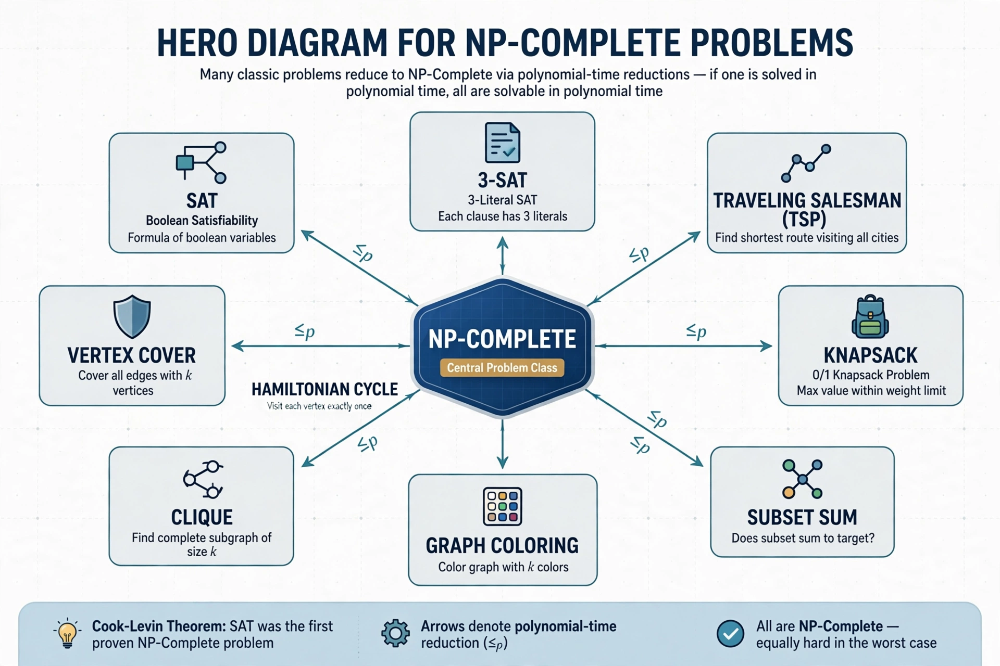

In computational complexity theory, a problem is NP-complete when: (1) it is in NP — a proposed solution can be verified in polynomial time; and (2) every problem in NP can be reduced to it in polynomial time. NP-complete problems are the hardest problems in NP; if any one had a polynomial-time algorithm, all would (and P = NP).

| Field | Computational complexity theory |
|---|---|
| Introduced | Stephen Cook (1971); Leonid Levin |
| First example | Boolean satisfiability problem (SAT) |
Stephen Cook proved in 1971 (independently Leonid Levin) that the Boolean satisfiability problem is NP-complete — the Cook–Levin theorem. Richard Karp's 1972 paper showed 21 classic problems NP-complete, popularising the concept. Thousands of problems are now known NP-complete, catalogued notably in Garey and Johnson's Computers and Intractability (1979).
The travelling salesman decision problem, knapsack, graph colouring, clique, vertex cover, Hamiltonian path, subset sum, and exact cover are NP-complete. Their optimisation versions are NP-hard.
No polynomial algorithm is known. In practice, problems are tackled with approximation algorithms, heuristics, SAT solvers and backtracking exploiting instance structure, parameterised algorithms, or quantum and exact exponential methods for small inputs. Whether P = NP remains a Millennium Prize Problem.